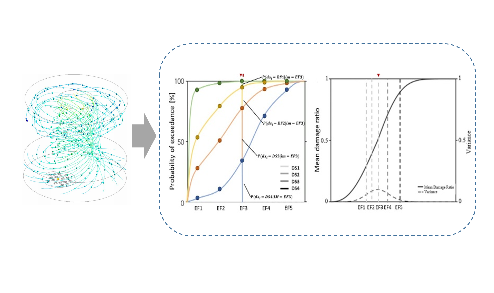
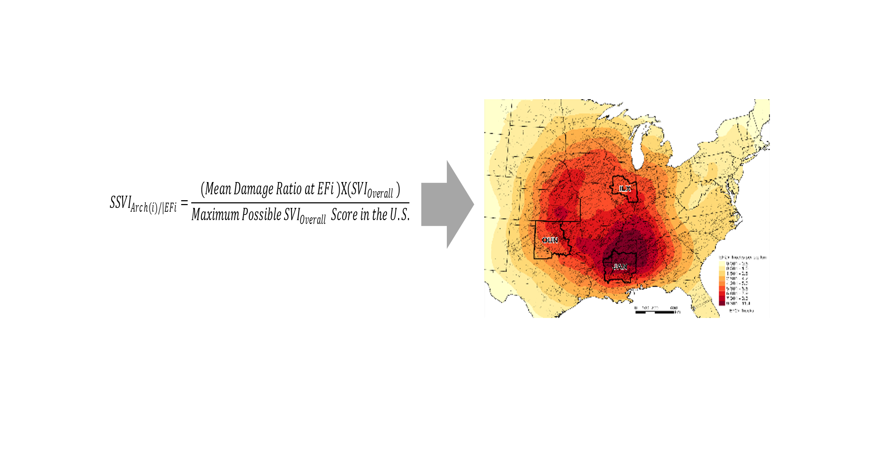

Home
About
Products
Tool
Publications
Related Sites
Contact
Laying the Cornerstone of Tornado Disaster Intervention: Assessing Structural and Social Vulnerability Interdependence
Photo courtesy of Scott Peake
Extracting Building Attributes Using Deep Learning

Developing an Innovative Approach for Tornado Fragility/Vulnerability Analysis and Reducing Structural Vulnerability

Determining Regional Patterns and Relationships between Climatological Tornado Risk, Structural Vulnerability, and Social Vulnerability
Study Tornado Risk Perception and Capacity for Mitigation
 Photo courtesy of Scott Peake
Photo courtesy of Scott Peake